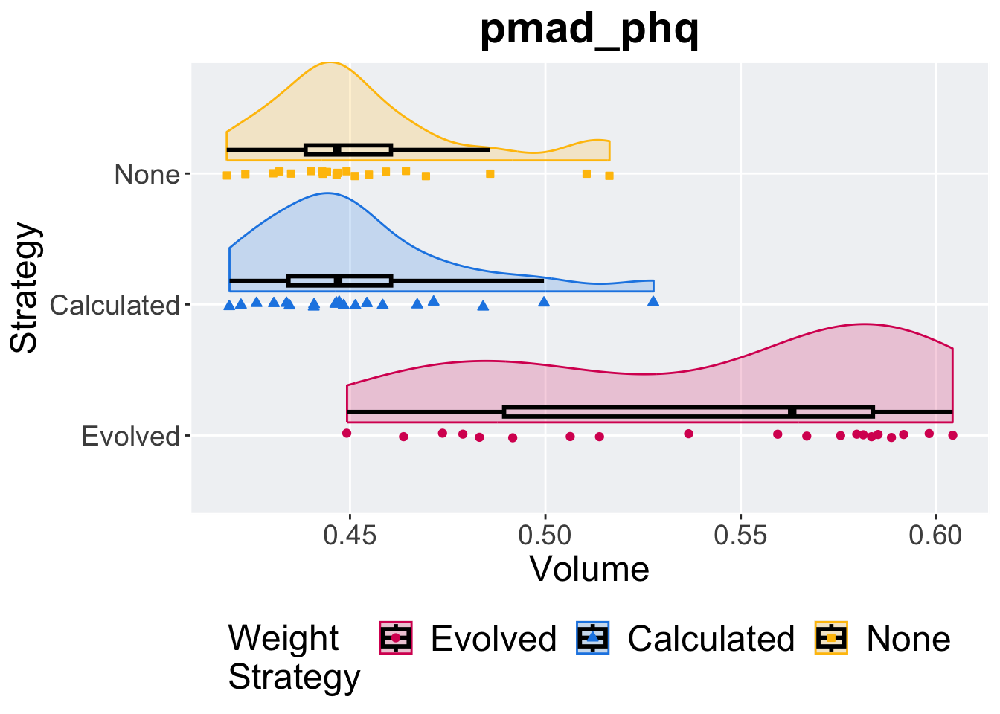

Chapter 13 PMAD PHQ
Here we report the hypervolume achived by evaluating the performance of each solution wihtin the Pareto front on the test set of the pmad_phq dataset.
13.1 Hypervolume

13.1.1 Summary stats
## # A tibble: 3 × 8
## exp count na_cnt min median mean max IQR
## <fct> <int> <int> <dbl> <dbl> <dbl> <dbl> <dbl>
## 1 Evolved 20 0 0.449 0.563 0.541 0.604 0.0944
## 2 Calculated 20 0 0.419 0.447 0.452 0.528 0.0263
## 3 None 20 0 0.418 0.447 0.453 0.516 0.021813.1.2 Kruskal-Wallis test
Detected differences between weight strategies.
##
## Kruskal-Wallis rank sum test
##
## data: hv by exp
## Kruskal-Wallis chi-squared = 29.615, df = 2, p-value = 3.708e-0713.1.3 Pairwise wlcoxon test
pairwise.wilcox.test(x = data$hv, g = data$exp, p.adjust.method = "bonferroni",
paired = FALSE, conf.int = FALSE, alternative = 'l')##
## Pairwise comparisons using Wilcoxon rank sum exact test
##
## data: data$hv and data$exp
##
## Evolved Calculated
## Calculated 2.5e-07 -
## None 3.2e-07 1
##
## P value adjustment method: bonferroni